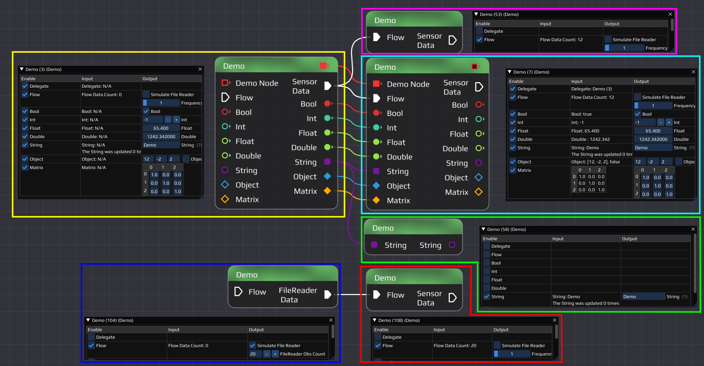
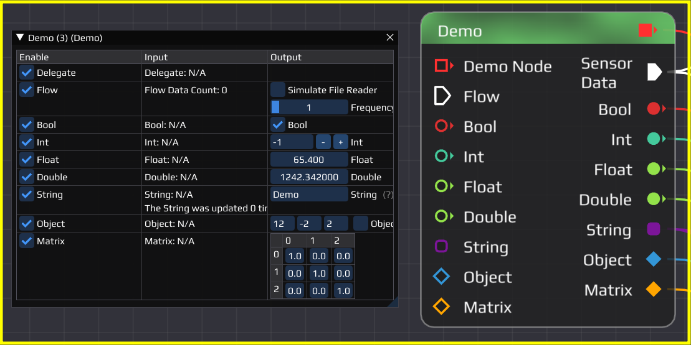
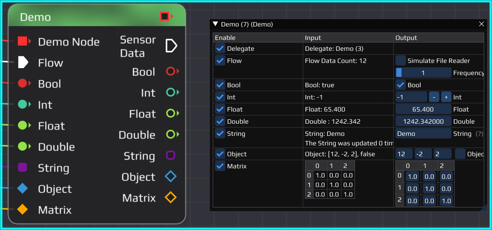
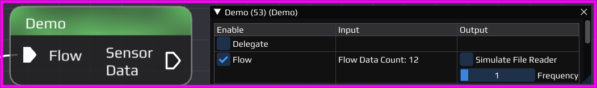
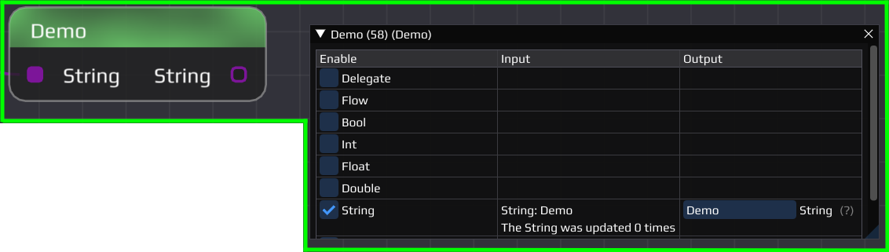
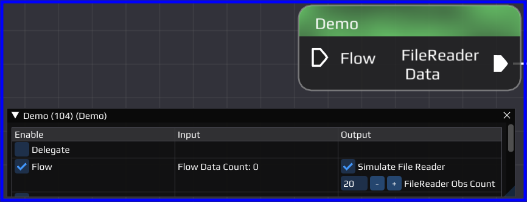
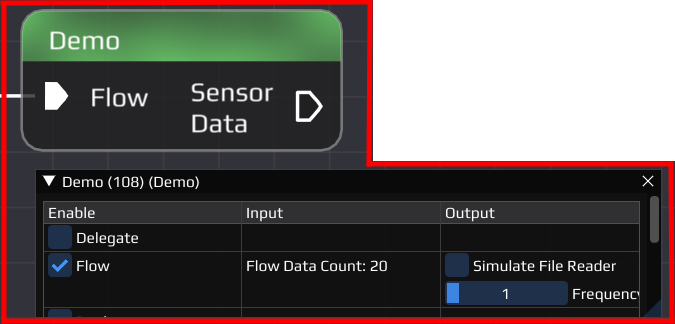

|
0.5.0
|
|
0.5.0
|
Please use the Getting started on GitHub to set up your development environment and to look up the commands to build the software.
Understanding the project folder structure is important for working with it. The following gives a brief overview of the folders and a small description of their content.
Let's start by looking at the NAV::Demo node. It is a node showcasing a lot of functionality a node can have and is also a good starting point for creating own nodes later on. The code is also well documented so it is recommended to look into the source code (Demo.hpp / Demo.cpp) while following along this tutorial. In the project directory there is the flow/_Demo.flow example file depicted below

This example flow shows 6 NAV::Demo nodes connected to each other, each showing a different feature. The node in the yellow box shows all possible output pin types nodes can have. In general pins can have 2 different types/functions, flow pins and data pins.

The pins seen in the yellow node are:
In order to create pins, one calls functions from the NodeManager namespace like NAV::NodeManager::CreateInputPin() and NAV::NodeManager::CreateOutputPin(). There are multiple overloads of both functions depending what purpose the pin serves. More can be read in the code documentation.
All pins from the yellow node are connected to the teal node. We can see in the configuration window, that the input values of teal coincide with the output values of the yellow node. When changing the GUI, you could instantaneously see the changes in the connected node.

The flow pin of the yellow node is set to simulate a sensor with output frequency of 1 Hertz. When running the flow it sends out packages regularly to the teal and pink nodes. In the configuration window of the receiving nodes a counter will count up every time data is received. This is done by a function which is called every time data becomes available. Instead of simply increasing a counter usually the incoming data would be processed and potentially new data sent out. While a node has no input data available its thread is put to sleep to not waste resources.

The teal and green nodes are also connected to the string pin of the yellow node. In the GUI we cannot only see the connected string, but also a counter showing how often the string was updated. This is done by the notification logic mentioned before. Every time the yellow node's string get updated, it notifies the connected nodes. These have a function which then can process the data and also acknowledge that the data was processed. All connected nodes need to acknowledge the notification before the yellow node could change the data again. This is useful in e.g. the plot node to ensure all the data gets plotted and not altered multiple times because the plot node was busy processing other data.

On the bottom of the flow, the blue node is connected to the red node. The blue node simulates a typical file reader. When running the flow it sends out a certain amount of data, and then it stops when no more data is available. When only data files are used, INSTINCT enters a post-processing mode which then stops the execution of the whole flow upon completion. In the example flow the post-processing mode can be achieved by deleting or disabling the yellow, pink, teal and green node.

In general reading files is also done by the worker thread of the node. When creating the output pin, the developer has to specify either a NAV::OutputPin::PollDataFunc when the node has only one flow output pin or a NAV::OutputPin::PeekPollDataFunc when the node has multiple flow output pins in order to call the functions in correct order. In the NAV::Demo node a NAV::OutputPin::PollDataFunc is used, as there is only one output flow pin. In the output pin creation the function NAV::Demo::pollData() is passed. The demo node however includes a function NAV::Demo::peekPollData() to illustrate how this functionality could be used.

In order to create your own node you need to create a class which derives from NAV::Node. There are multiple functions which need to be overridden and some which provide default implementations in case you do not need a specific behavior.
After creating the node it needs to be registered in the software in the NAV::NodeRegistry::RegisterNodeTypes() function. Afterward, it should be available in the GUI.
Flow pins can only pass data which is derived from NAV::NodeData. This ensures that each package contains an absolute time. Similar to new nodes, new data types need also to be registered in the NAV::NodeRegistry::RegisterNodeDataTypes() function.
The data classes can have C++ inheritance, however additionally they need a static function parentTypes() which tells the software about the inheritance. This makes it possible to connect e.g. a NAV::PosVel output pin to a NAV::Pos input pin, because NAV::PosVel is derived from NAV::Pos. As an example please see NAV::PosVel::parentTypes() and NAV::Pos::parentTypes()
The following table shows all command line arguments available
| Option | Default | Description |
|---|---|---|
| config | - | List of configuration files to read command line arguments from (instead of providing them directly) |
| version,v | - | Display the version number |
| help,h | - | Display this help message |
| sigterm | - | Programm waits for -SIGUSR1 / -SIGINT / -SIGTERM |
| duration | 0 | Program execution duration [sec] |
| nogui | - | Launch without the gui |
| noinit | - | Do not initialize flows after loading them |
| load,l | Flow file to load | |
| rotate-output | - | Create new folders for output files |
| output-path,o | logs | Directory path for logs and output files |
| input-path,i | data | Directory path for searching input files |
| flow-path,f | flow | Directory path for searching flow files |
| implot-config | implot.json | Config file to read implot settings from |
| global-log-level | trace | Global log level of all sinks (possible values: trace/debug/info/warning/error/critical/off) |
| console-log-level | info | Log level on the console (possible values: trace/debug/info/warning/error/critical/off) |
| file-log-level | debug | Log level to the log file (possible values: trace/debug/info/warning/error/critical/off) |
| flush-log-level | info | Log level to flush on (possible values: trace/debug/info/warning/error/critical/off) |
| log-filter | Filter/Regex for log messages |
Some combinations of arguments for use cases
If you are using VSCode there are predefined tasks for running and debugging which also include a lot of command line arguments either set to some default value or commented out for ease of use. See for example the MAIN: Build & run project task inside the tasks.json.
INSTINCT is mainly developed with VSCode and includes its project files.
The most used tasks are
The tasks make use of the Status Bar Parameter extension, which allows setting certain parameters directly in the VSCode status bar without adapting the tasks.json
In the launch.json file various debugging tasks are defined